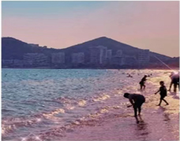
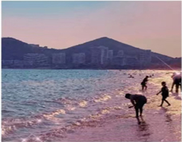

三亚——东方的夏威夷
 吉庆广场起点是一个欧洲教堂，教堂前还有草坪和盛开的粉色花朵，氛围十分浪漫。几百米的一条街，基本没有当地人，来着的都是拍照的团队或者游客。

大东海旅游名胜区位于三亚市东郊，距三亚镇3公里，与榆林港毗邻，在兔尾岭和鹿回头两个山头中间，是一个自然形成的半月形浅水海湾。水面是月牙形的沙滩，南面是浩渺无边的大海，是一个不可多得的滨海游览区。
要说三亚哪条公路最美、最适合自驾游，那肯定要数太阳湾公路了，这里被称为“最美沿海公路”，不管是骑行还是自驾游，在这条公路上走上一趟，被路两边的大海和青山折服。
鹿回头风景区坐落在三亚市西南端鹿回头半岛内，共有大小五座山峰，最高海拔181米。公园三面环海，一面毗邻三亚市区，是登高望海、观看日出日落与俯瞰三亚市全景的佳处。
吉庆广场起点是一个欧洲教堂，教堂前还有草坪和盛开的粉色花朵，氛围十分浪漫。几百米的一条街，基本没有当地人，来着的都是拍照的团队或者游客。

大东海旅游名胜区位于三亚市东郊，距三亚镇3公里，与榆林港毗邻，在兔尾岭和鹿回头两个山头中间，是一个自然形成的半月形浅水海湾。水面是月牙形的沙滩，南面是浩渺无边的大海，是一个不可多得的滨海游览区。
要说三亚哪条公路最美、最适合自驾游，那肯定要数太阳湾公路了，这里被称为“最美沿海公路”，不管是骑行还是自驾游，在这条公路上走上一趟，被路两边的大海和青山折服。
鹿回头风景区坐落在三亚市西南端鹿回头半岛内，共有大小五座山峰，最高海拔181米。公园三面环海，一面毗邻三亚市区，是登高望海、观看日出日落与俯瞰三亚市全景的佳处。
碧海连天远，琼崖尽是春。
鹿回头风景区坐落在三亚市西南端鹿回头半岛内，共有大小五座山峰，最高海拔181米。公园三面环海，一面毗邻三亚市区，是登高望海、观看日出日落与俯瞰三亚市全景的佳处。
大小洞天始创于南宋，因其奇特秀丽的海景、山景、石景与洞景，为当时的知军毛奎游访开发而得名。它是海南省历史最悠久的景点，被誉为“琼崖八百年第一山水名胜”，也是中国最南端的道家文化旅游胜地。
沙滩坡度平缓，曲线优美，海水清澈见底。冬可避寒、夏能消暑，是以热带海洋风光，中国传统文化、南国民族风情为特点的国际一流避寒和休闲度假胜地。
槟榔谷可以说是海南黎苗少数民族文化的“活化石”，看旖旎雨林风光、感受自然气息、领略民族风情。